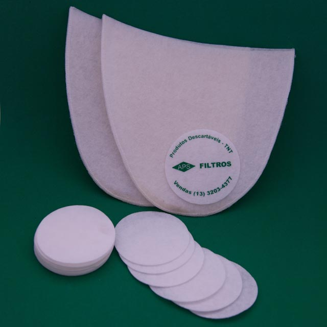

A APS Filtros foi constituída em 1981, inicialmente para atuar na manufatura e
comercialização de elementos filtrantes "tipo membranas" nos segmentos agropecuário
(controle do beneficiamento do leite-laboratório / lactofiltração / análise do café
solúvel e do melado do caldo da cana de açúcar), de tintas e vernizes (nos equipamentos
tipo filtros prensa / sparkler), passando posteriormente a atender outros segmentos de
produtos descartáveis bem como na distribuição de fitas dupla face de algodão.
Produtos Área agrícola - cadeia leite
Discos de lentine para análise do leite - café solúvel ou outros líquidos (segmento
de laticínios na indústria de beneficiamento do leite, na indústria de café solúvel,
camisa de filtros para ordenhadeiras mecânicas)
Disco Lentini: caixas com 200 unidades do tipo “APS” - marca DISLEITE - Ø=31,7 mm ou
1 ¼”.
Aplicação: filtro minit para lactofiltração do leite e análises do café solúvel, do
melado da cana de açúcar e outros.
Camisas de filtro – tipo manga – costurados (Ordenhadeiras mecânicas);
Camisas de filtro – caixas ou pacotes com 100 peças, tipo filtro manga, costurados em
diversas dimensões.
Aplicação: ordenhadeiras mecânicas e outros.
Filtro 1
Filtro
Produtos Área industrial
Cadeia da indústria de tintas para clarificação de resinas, utilizados no filtro tipo
spakler.
Produtos Área industrial
Membranas Filtrantes Circulares: papel filtro ou TNT (filtros industriais).
Produtos Área industrial
Filtro Industrial: caixas e/ou pacotes com 100 peças, utilizados no filtro sparkler ou filtro tipo prensa.
Aplicação: filtração de resinas e vernizes nas indústrias de tintas e vernizes e/ou filtração e clarificação de líquidos nas industrias de óleos vegetais e outros
Produtos Área comercial
Diversas produtos e descartáveis como porta CDs e DVDs e descansos de copos entre outros
em TNT (tecido não tecido).

Produtos Área comercial
Diversas produtos e descartáveis como porta CDs / DVDs / BDs e descanso de copos entre outros
em TNT (tecido não tecido);
Produtos Fitas dupla face
Distribuição de fitas de algodão amarela tipo dupla face "forte", medidas diversas
sob consulta com 30,00 m de extensão para diversas aplicações como mega-hair.